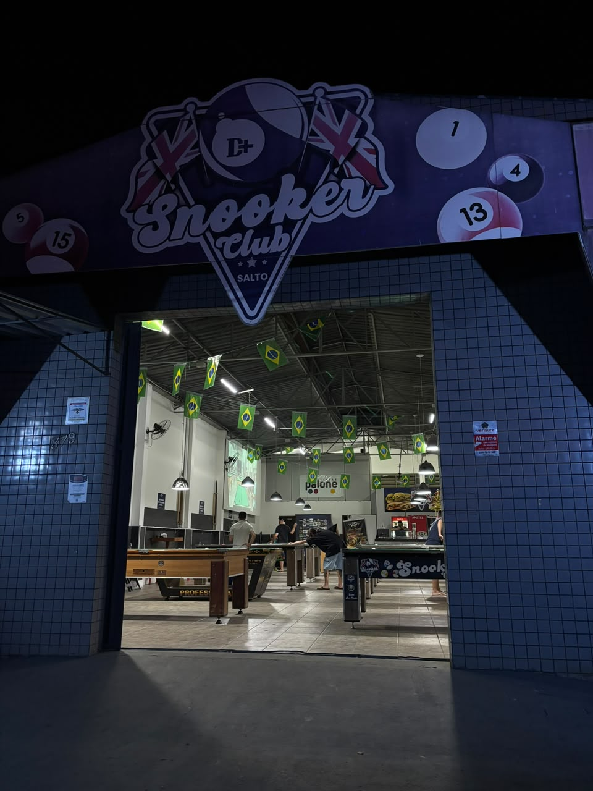
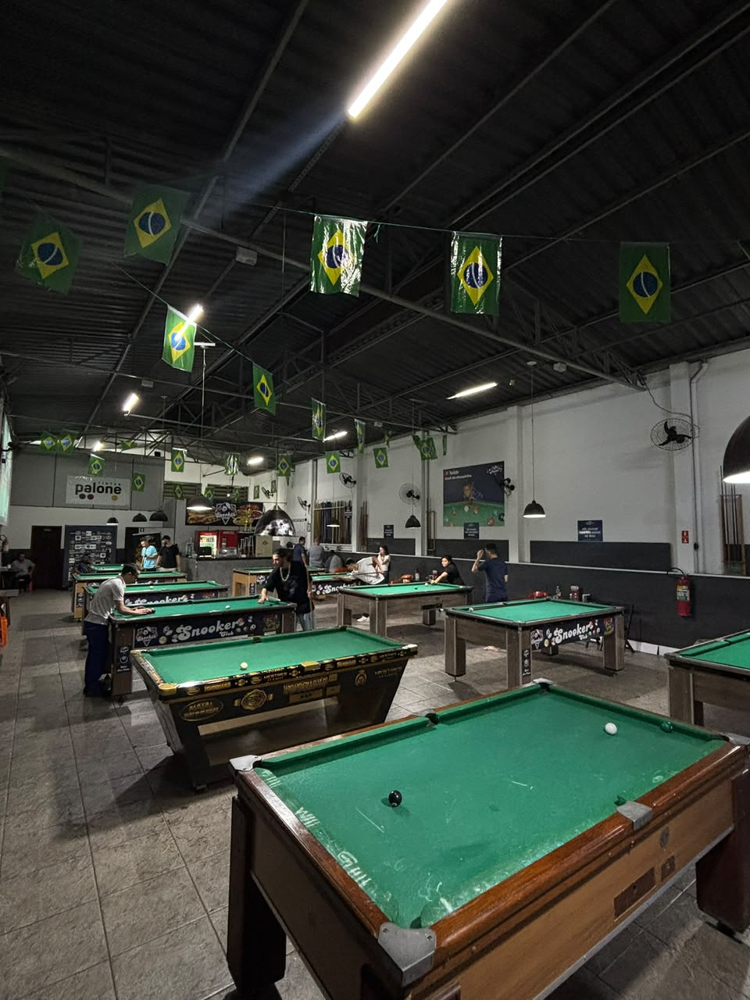
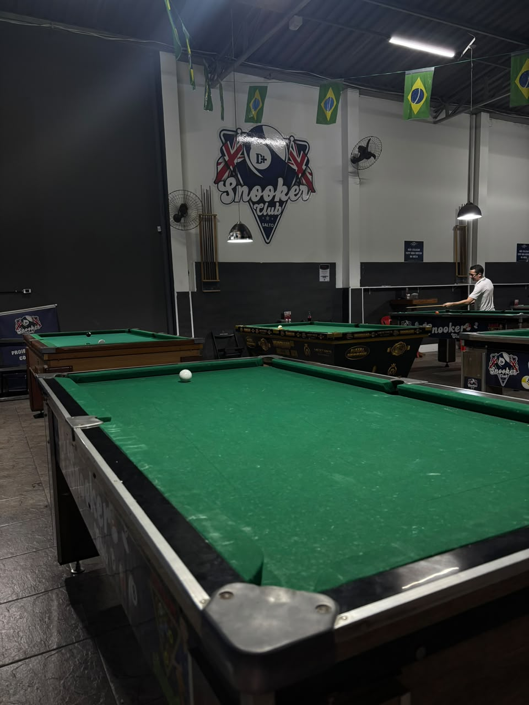
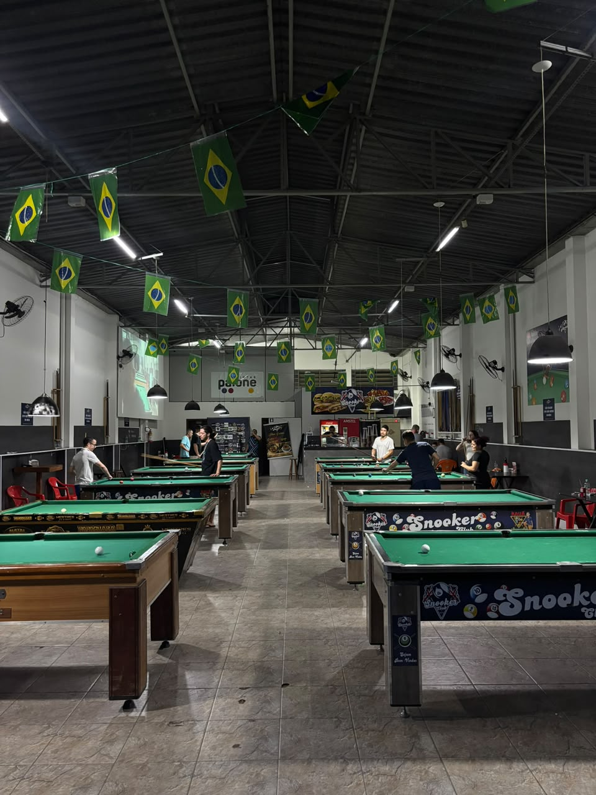

A história
O Snooker Club Salto existe desde 2022 e nasceu para ser um ponto de encontro de quem ama a sinuca — um espaço feito de tacadas, histórias e comunidade.
Snooker Club Salto · Desde 2022
Conforto e entretenimento para todas as famílias, com a experiência única do esporte da sinuca — em Salto/SP.
Sobre o clube
O Snooker Club Salto existe desde 2022 e nasceu para ser um ponto de encontro de quem ama a sinuca — um espaço feito de tacadas, histórias e comunidade.
Oferecer conforto e entretenimento a todas as famílias, proporcionando uma experiência única por meio do esporte da sinuca.
Mesa verde, luz baixa e silêncio na hora da tacada. Aqui o snooker é levado a sério — do primeiro choque ao último frame.

Salão amplo, iluminação de mesa a mesa e ambiente para toda a família.
Galeria
Fotos reais do nosso salão, misturadas ao clima clássico do snooker inglês.





Campeonatos
Organizamos campeonatos com transmissão ao vivo no YouTube. Quer entrar na tabela? Inscreva seu time pelo WhatsApp.
 AO VIVO
AO VIVO
Lives no YouTube
Os jogos e campeonatos do clube são transmitidos no canal Kauã da Sinuquinha. Inscreva-se no canal e não perca nenhuma tacada.
Acessar o canalyoutube.com/@kauadasinuquinha
Horário de funcionamento
Verificando… Horários de horário de Salto/SP.
Endereço e contato
Rua John Kennedy, 379
Bela Vista, Salto/SP
CEP 13321-380
(11) 98515-7388
+55 11 98515-7388
@snookerclube_salto
Fotos, avisos e resultados
Kauã da Sinuquinha
Lives de campeonatos e jogos